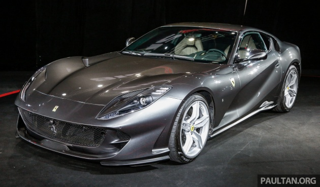
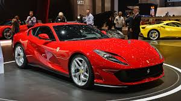
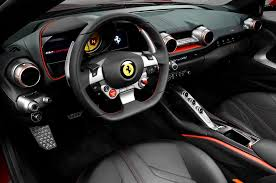
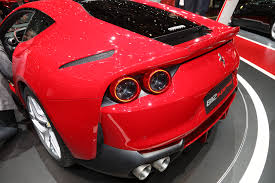

Ferrari
812 Superfast草




- 在轉速8,500rpm時可輸出高達788hp的馬力，比起前世代F12 berlinetta的740hp增加近50hp馬力
- 也較F12 tdf性能版增加近20hp馬力。最大扭力則有73kgm(7,000rpm)，且在3,500rpm時就可以輸出80%的扭力
- 原廠公布的數據顯示812 Superfast直線加速0~100km/h僅需2.9秒，極速更達340km/h以上
- 812 Superfast的加速性能與性能款F12 tdf持平，兩者之間駕馭的差異可就值得後續追蹤了
- 在轉速8,500rpm時可輸出高達788hp的馬力，比起前世代F12 berlinetta的740hp增加近50hp馬力
- F12 tdf性能版增加近20hp馬力。最大扭力則有73kgm(7,000rpm)，且在3,500rpm時就可以輸出80%的扭力
- 原廠公布的數據顯示812 Superfast直線加速0~100km/h僅需2.9秒，極速更達340km/h以上。
- 812 Superfast的加速性能與性能款F12 tdf持平，兩者之間駕馭的差異可就值得後續追蹤了。,